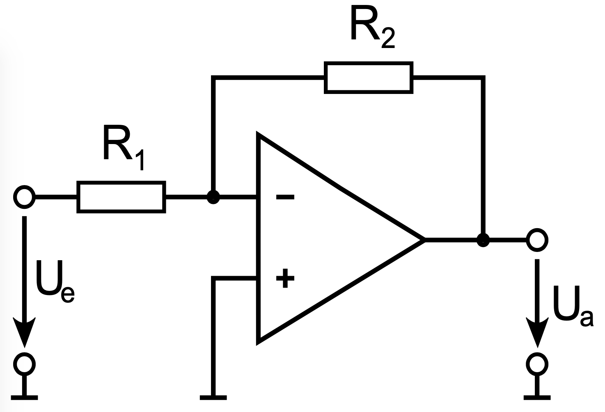
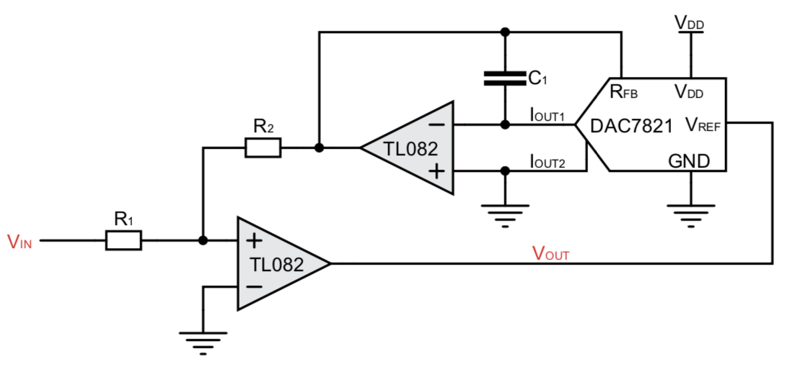
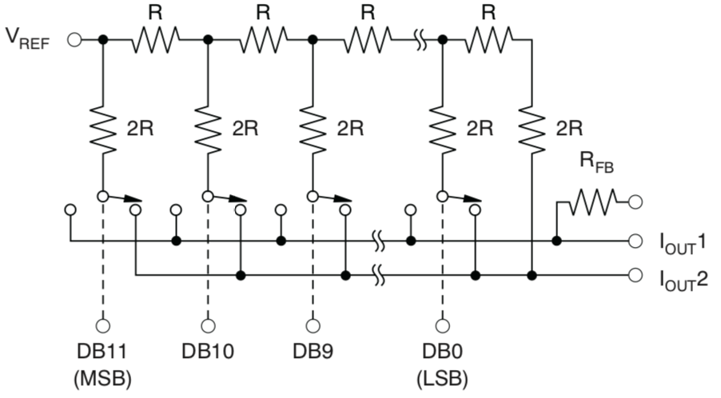
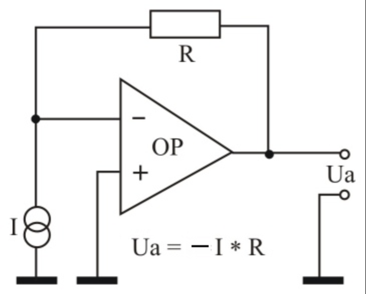
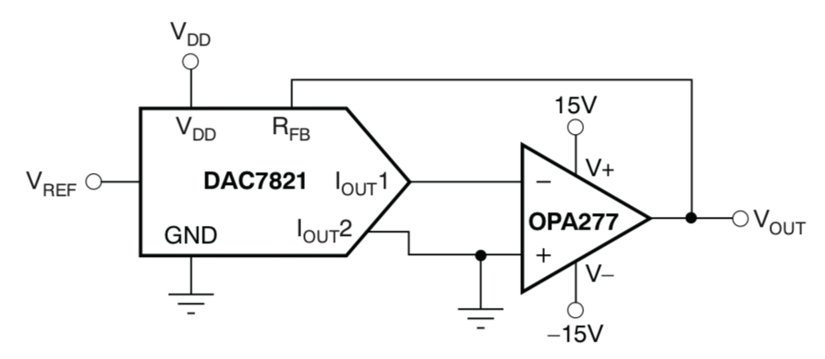
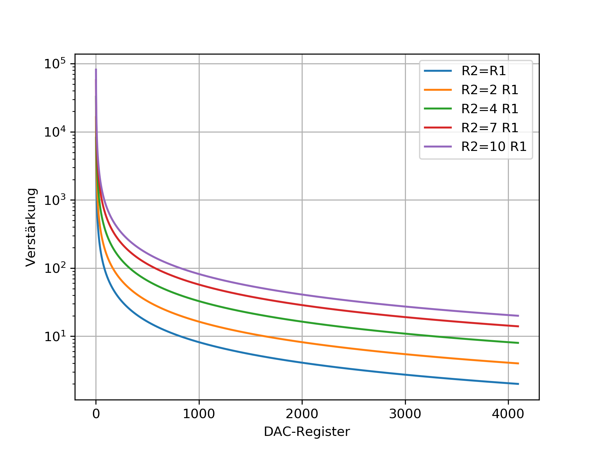
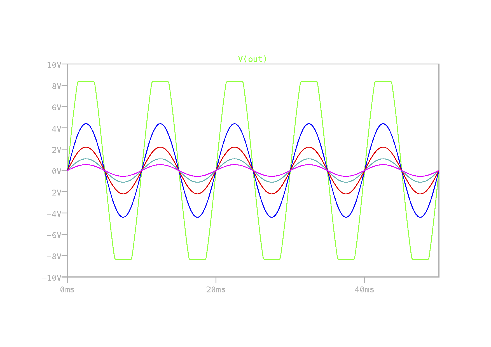
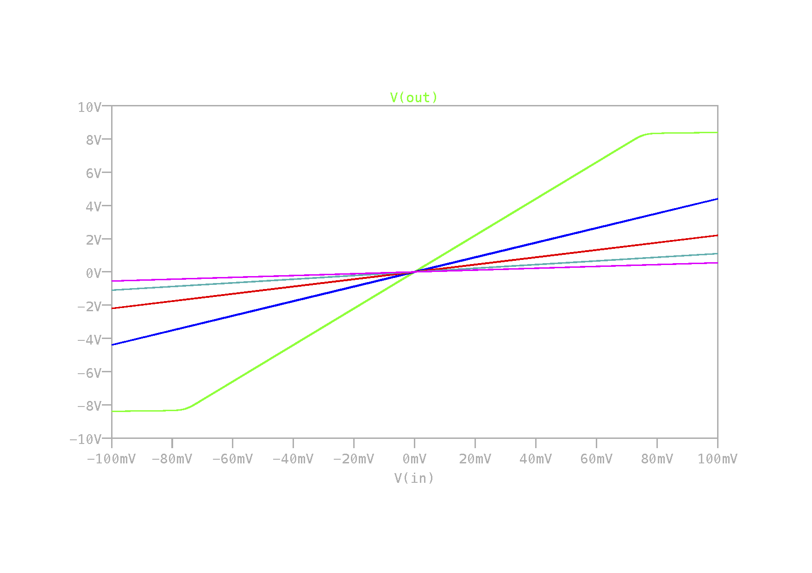
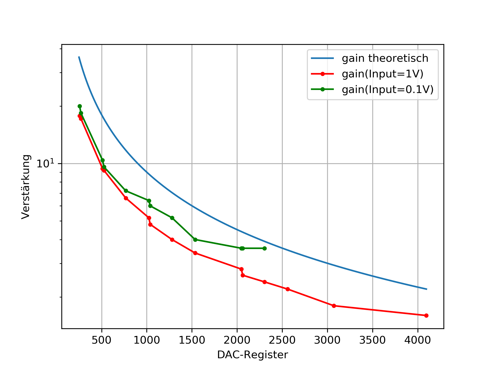

Entwurf eines digital kontrollierten GSA’s¶
Kurze Theorie und Motivation¶
Die Verstärkung eines Operationsverstärkers wird von der Beschaltung bestimmt, genauer Betrachtet im einfachsten Fall von zwei Widerständen.
{##13_fig_01 .align-center width=”30.0%”}
Die Verstärkung ergibt sich für diese Schaltung durch das Verhältnis der Widerstände:
Die Idee ist nun, die Verstärkung digital zu steuern. Dazu müsste nur einer der Widerstände R1 oder R2 verändert werden. Dies kann beispielsweise durch das Vorschalten eines digital veränderbaren Widerstandes vor R2 bewerkstelligt werden.
{##13_fig_02 .align-center width=”50.0%”}
Der DAC(Digital Analog Converter) kann auch als digitales Poti bezweichnet werden, er arbeitet nämlich als Spannungs- oder Stromteiler. Dafür sorgt das sogenannte R2R-Netzwerk.
{##13_fig_03 .align-center width=”40.0%”}
Das R2R-Netzwerk besteht aus einer Hintereinanderreihung indentischer Zellen. Beginnnend vom Knoten Vref fällt an jedem Knoten je die Hälfte der Spannung des vorigen Knotens ab, wobei im ersten Konten Vref/2 abfällt. Somit ist die Spannung am ersten Konten Vref/2, am zweiten Koneten Vref/4, am dritten Knoten Vref/8, und so weiter. Als Stromteiler funktionierend wird der Strom jeder Zelle nun auf den Stromausgang I1out oder I2out geschaltet, sodass sich an jedem Ausgang der jeweilige Summenstrom einstellt. Die Schalter werden über ein digitales Register gesteuert. Bei einem Netzwerk mit 12 Zellen ist das Register 12-Bit groß. Der Ausgangsstrom ist wie folgt von dem Register (CODE) abhängig:
Da der Operationsverstärker inder Versuchsschaltung als Spannungsverstärker arbeitet, muss er am Eingang auch eine Spannung sehen. Der Strom des DAC muss also in eine Spannung gewandelt werden. Dazu inst der Transimpedanzwandler vorgesehen.
{##13_fig_04 .align-center width=”30.0%”}
n Transimpedanzwandler
Setzt man in die GLeichung aus dem Bild den Strom I{out}1 des DACs ein, gilt für die Spannung hinter dem Transimpedanzwandler
Wenn der Feedbackwiderstand so gewählt wird, dass er dem Innenwiderstand des DAC gleicht, vereinfacht sich die Gleichung zu
Das bewirkt die Verwendung des Feedbackwiderstande Rfb des DACs.
{##13_fig_05 .align-center width=”40.0%”}
Nun verändert sich die Gleichung für die Verstärkung wie folgt: Durch den Widerstand R2 der Grundverstärkerschaltung wird nicht direkt die Ausgangsspannung des Operationsverstärkers zurückgekoppelt, sondern die durch den DAC skalierte Spannung. Setzt man also Ua des Transimpedanzwandler in die Verstärkungsgeleichung g ein und stellt nach Ua um, erhält man für die Ausgangsspannung:
Das Verhältnis der Widerstände R1 und R2 legt die minimale Verstärkung fest. Durch den Einfluss des DAC erhöht sich die Verstärkung, allerdings nicht linear, was dazu führt, dass unter Umständen nicht das ganze Spektrum des DAC sinnvoll genutzt werden kann.
{##13_fig_06 .align-center width=”60.0%”}
Spezifikation¶
Um die Eigenschaften des digital kontrollierten GSA’s zu überprüfen, muss dieser erstmal aufgabaut werden.
{##13_fig_07 .align-center width=”50.0%”}
Für diesen Versuch soll das Verhältnis R2/R1, also die minimale Verstärkung auf 2,1 eingestellt werden. Da bietet es sich an \(R_2=21\,k\Omega\) und \(R_1=10\,k\Omega\) zu wählen. Der Kondensator, der zum Stabilisieren des Transimpdeanzwandlers(diese neigen zum Oszillieren) gedacht ist, kann mit 1nF bemessen werden.
Mit einer Sinusspannung von 100Hz und 100mV Amplitude am Eingang der Versuchsschaltung soll diese getestet werden, indem der CODE des DAC über DIP-Schalter immer wieder geändert wird.
Zu beobachten sind dabei die Eingangsspannung Uin und die Ausgangsspannung Uout mit einem Oszilloskop.
In einer Simulation mit LT Spice kann das Ergebnis gut prognostiziert werden. Der DAC wird dafür einfach durch eine spannungsabhängige Stromquelle modelliert. Der Übersetzungsfaktor ist so zu wählen, dass er maximal dem Kehrwert des Innenwiderstand des DAC entspricht, speziell in diesem Fall soll der Faktor unter ein Zehntausendstel liegen, da der Innenwiderstand des DAC \(10\,k\Omega\) beträgt. Das folgende Bild zeigt das Simulationsergbnis mit den Übersetzungsfaktoren 2e-6, 5e-6, 10e-6, 20e-6, 40e-6.
{##13_fig_08 .align-center width=”65.0%”}
Trägt man die Eingangsspannung über die Eingangsspannung ab, erhält man die Verstärkungsgerade. Je steiler sie ist desto größer die Verstärkung.
{##13_fig_09 .align-center width=”65.0%”}
Während der Messung am Versuchsaufbau sollen die Ausgangsamplituden zu eingestellten CODEs aufgezeichnet werden. Diese Spannung, normiert durch die Eingangsspannung und abgetragen auf den CODE des DAC soll dann der theoretischen Verstärkungskennlinie aus Bild6 entsprechen.
Messungen¶
Für die Messung wurden die Widerstände \(R_1=10\,k\Omega\) und \(R_2=21\,k\Omega\) gewählt, der Kondesator \(C_1=1\,nF\). Nach und nach wurden über DIP-Schalter unterschiedliche CODEs ins DAC-Register geschrieben und die sich einstellenden Ausgangsspannunen dazu gemessen und notiert. Diese Messreihe wurde mit Eingangsspannungen von 100mV und 1V durchgeführt. Teilt man die Ausgangsspannungen durch die Eingangspannungen erhält man die jeweilige Verstärkung, die sind in folgender Grafik über den Inhalt des DAC-Register als Messergebnis abgetragen.
{##13_fig_10 .align-center width=”60.0%”}
Der Verlauf der gemessenen Verstärkungskennlinien gleicht der theoretisch ermittelten. Die insgesamt etwas geringeren Verstärkung aus der Messung gegenüber der theoretischen Verstärkung ist auf die Tolerenz der eingesetzen Widerstände zurückzuführen. Bild 6 zeigt, dass durch variierende Widerstandsverhältnisse der Offset der Verstärkungskennlinie variiert.